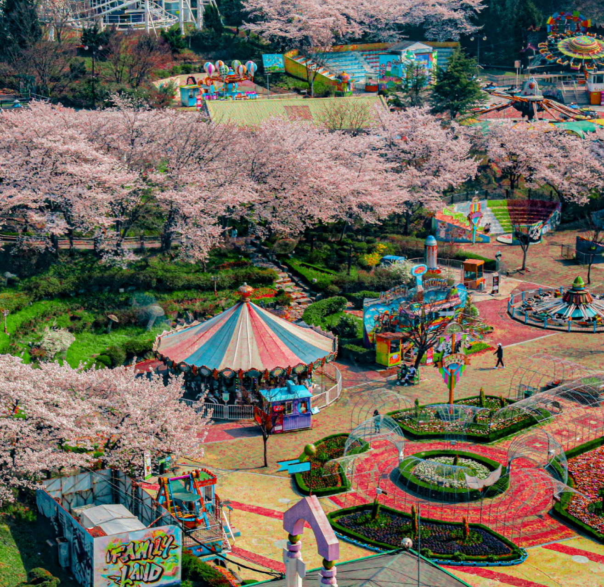

일상 속 새로움을 찾고 싶을 때
여기 가자 보자!
여기 가자 보자!


우리지역 핫플이 궁금해?
숨은 명소, 가까운 순으로 확인하기!
전체보기

삼청도 골목길
서울에서 가장 스타일리시한 골목, 삼청동. 언제부터인가 가난한 예술가들이 삼청동으로 찾아들었다.
삼청도 골목길
서울에서 가장 스타일리시한 골목, 삼청동. 언제부터인가 가난한 예술가들이 삼청동으로 찾아들었다.
삼청도 골목길
서울에서 가장 스타일리시한 골목, 삼청동. 언제부터인가 가난한 예술가들이 삼청동으로 찾아들었다.
시원함 가득 품은 실내 동굴 여행
더위 피해 시원하게 즐겨요
전체보기
삼청도 골목길
서울에서 가장 스타일리시한 골목, 삼청동. 언제부터인가 가난한 예술가들이 삼청동으로 찾아들었다.
삼청도 골목길
서울에서 가장 스타일리시한 골목, 삼청동. 언제부터인가 가난한 예술가들이 삼청동으로 찾아들었다.
삼청도 골목길
서울에서 가장 스타일리시한 골목, 삼청동. 언제부터인가 가난한 예술가들이 삼청동으로 찾아들었다.
GABOZA PICK
추천 여행지 코스를 알려드려요.

광주패밀리랜드
광주 북구
광주패밀리랜드
사랑이 가득한 꿈의 놀이동산, 광주패밀리랜드
경기 시흥시
시흥배곧한울공원
아름다운 바다를 바라보며 휴식할 수 있는 공원
시흥배곧한울공원
영남 알프스
울산 울주군
영남 알프스
가지산을 중심으로 해발 1천m 이상의 9개의 산